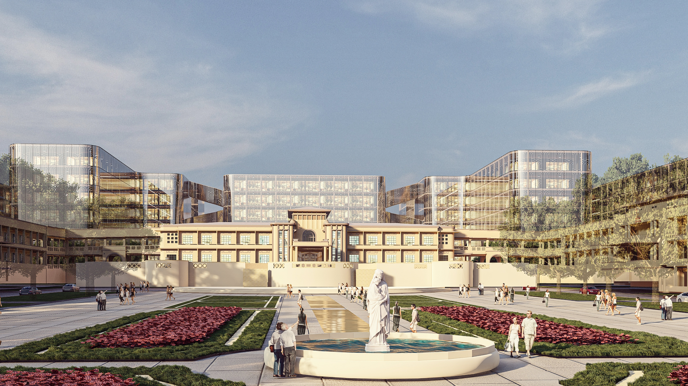
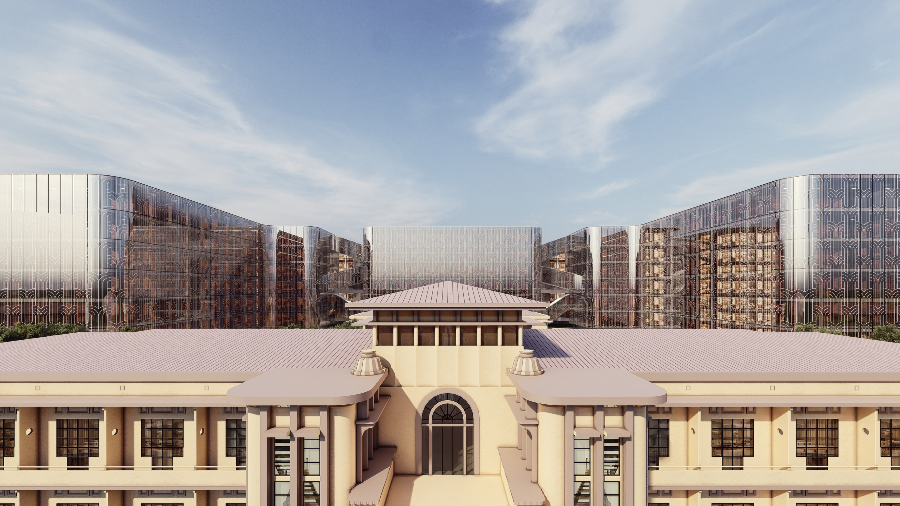
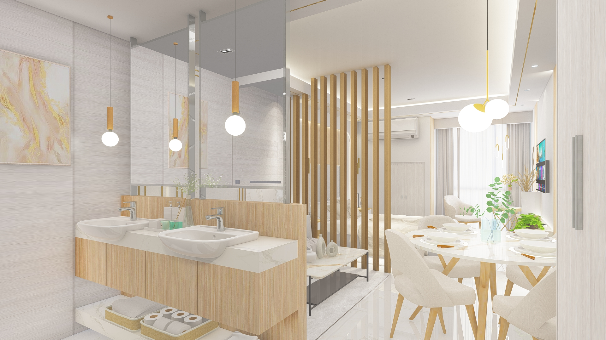
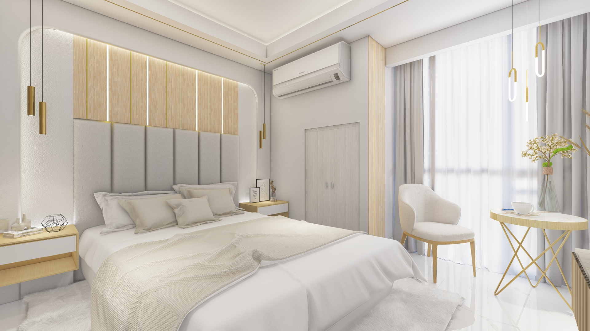
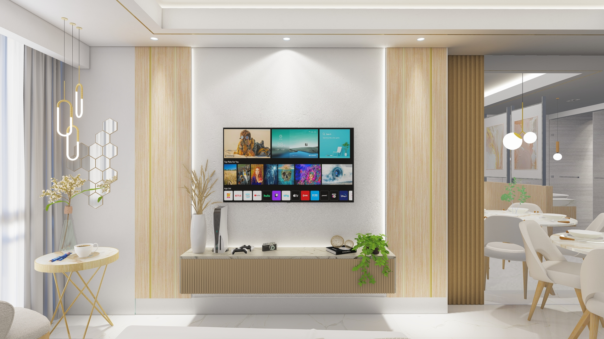

Our Projects
Explore our completed works — a blend of creativity, precision, and sustainable design solutions.
Food & Beverage


 Project Focus_ Bayle Restaurant - Tabuk, Kalinga/2.jpg)
 Project Focus_ Bayle Restaurant - Tabuk, Kalinga/1.jpg)
 Project Focus_ Bayle Restaurant - Tabuk, Kalinga/3.jpg)
Office


Commercial



 PROJECT FOCUS_ Indonesian Embassy – Legazpi Village, Makati City/PERSPECTIVE (83)1.png)
 PROJECT FOCUS_ Indonesian Embassy – Legazpi Village, Makati City/PERSPECTIVE (84)1.png)
 PROJECT FOCUS_ Indonesian Embassy – Legazpi Village, Makati City/PERSPECTIVE (85)1.png)
Interior





Hospitality
 Project Focus_ Dental Clinic Interior – Pasig City/PERSPECTIVE (77)1.png)
 Project Focus_ Dental Clinic Interior – Pasig City/PERSPECTIVE (78)1.png)
 Project Focus_ Dental Clinic Interior – Pasig City/PERSPECTIVE (79)1.png)


Residential